import torch
import torch.nn as nn
import matplotlib.pyplot as plt
x = torch.linspace(-10, 10,steps=100)
relu = torch.nn.ReLU()
y = relu(x)
plt.title("ReLU")
plt.plot(x.tolist(), y.tolist())
plt.show()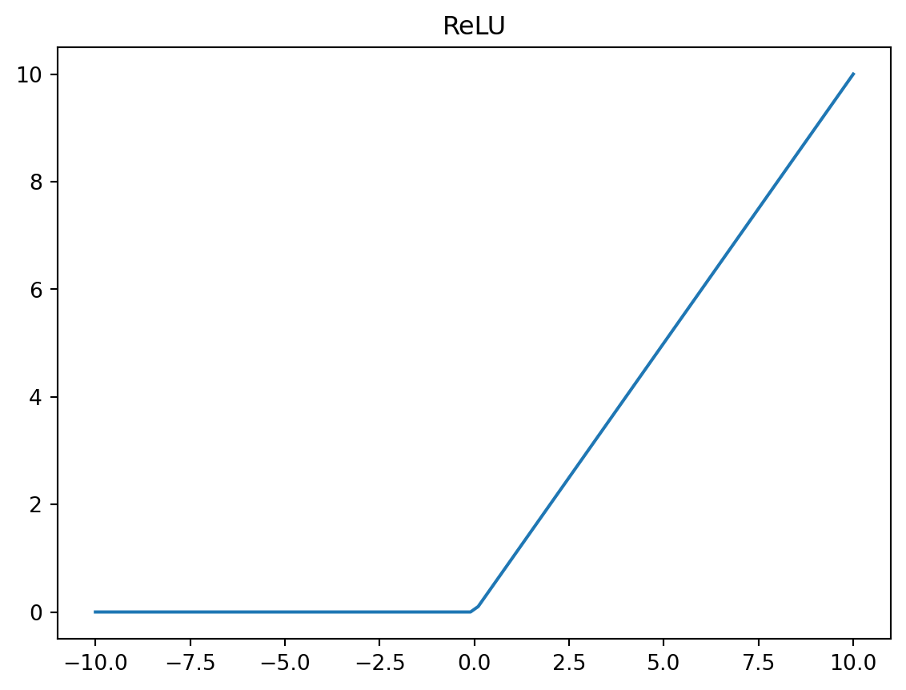
Las arquitecturas de redes neuronales se refieren a los diseños estructurales y organizativos de redes neuronales artificiales (RNA). Estas arquitecturas determinan cómo se organiza la red, incluida la cantidad de capas, la cantidad de neuronas en cada capa, las conexiones entre neuoronas y las funciones de activación utilizadas. Se forman diferentes arquitecturas de redes neuronales alterando estos componentes estructurales para adaptarse a tareas o desafíos específicos. Si desea conocer los tipos de arquitectura de redes neuronales que debe conocer, este artículo es para usted. En este artículo, le explicaré los tipos de arquitecturas de redes neuronales en Machine Learning y cuándo elegirlas.
Una función de activación es una función que se agrega a una red neuronal para ayudar a la red a aprender dependencias no lineales complejas. Una función de activación típica debe ser diferenciable y continua en todas partes. A continuación proporcionaré algunos ejemplos de funciones de activación utilizando la biblioteca PyTorch.
ReLU o la función ReLU realiza una operación simple: \(y = \max (0, x)\). Aquí te proporcionó un ejemplo de uso de la función ReLU utilizando PyTorch.
import torch
import torch.nn as nn
import matplotlib.pyplot as plt
x = torch.linspace(-10, 10,steps=100)
relu = torch.nn.ReLU()
y = relu(x)
plt.title("ReLU")
plt.plot(x.tolist(), y.tolist())
plt.show()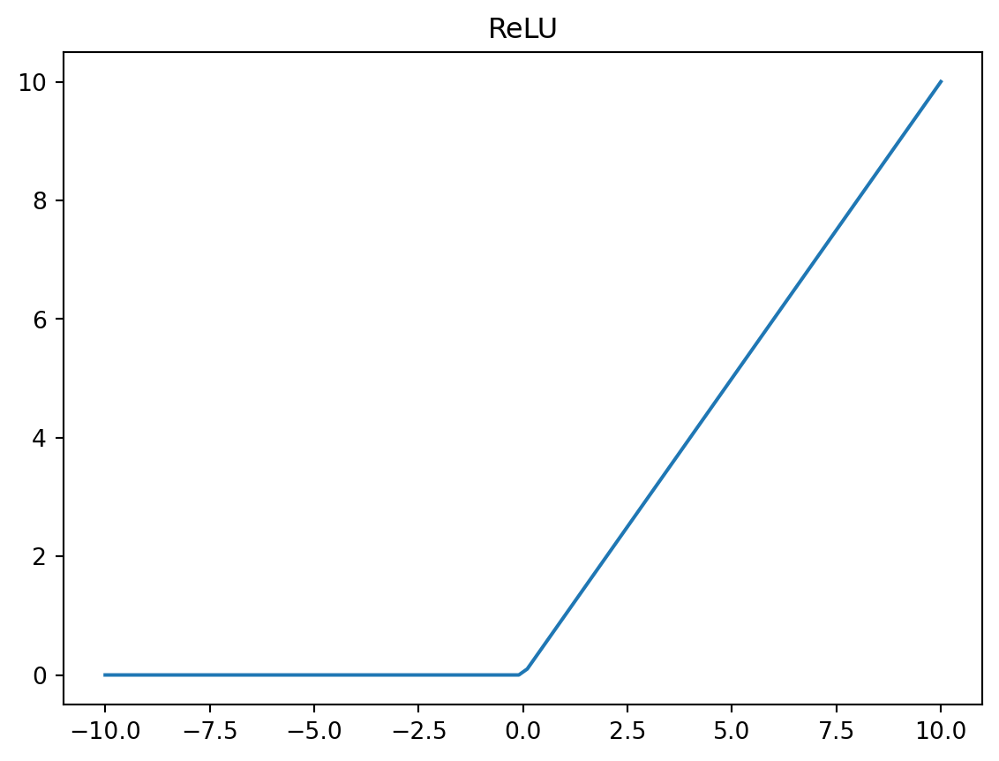
Es una de las funciones de activación no lineal más comunes. La función sigmoidea se representa matemáticamente como:
\[ \sigma(x) = \frac{1}{1 + e^x} \]
Al igual que ReLU, la función \(\sigma\) se puede construir simplemente usando PyTorch.
import torch
import torch.nn as nn
import matplotlib.pyplot as plt
x = torch.linspace(-10, 10,steps=100)
sigmoid = torch.nn.Sigmoid()
y = sigmoid(x)
plt.title("Sigmoidea")
plt.plot(x.tolist(), y.tolist())
plt.show()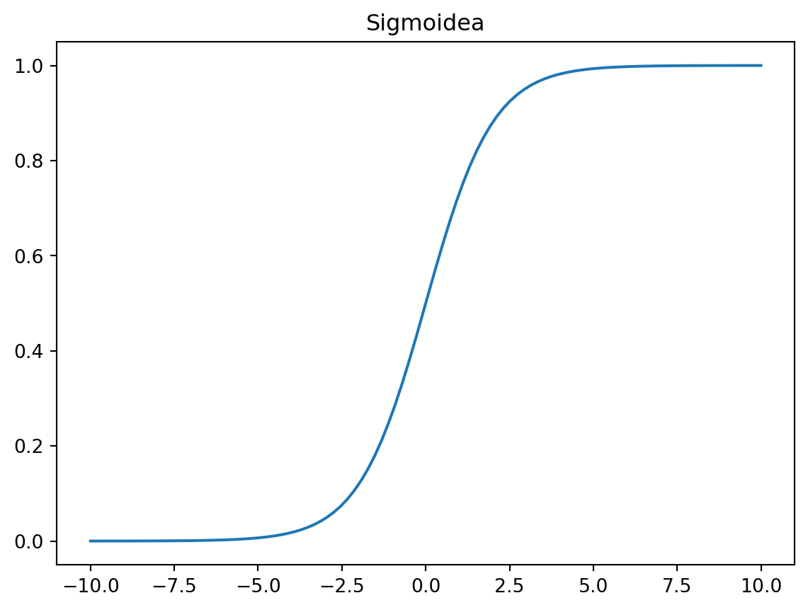
La función tangente hiperbólica es similar a la función sigmoidea, pero devuelve valores en el rango \((-1,1)\). El beneficio de Tanh sobre \(\sigma\) es que las entradas negativas se asignarán estrictamente a negativa, y las entradas positivas se asignarán estrictamente a positivas:
\[ \tanh(x) = \frac{e^x - e^{-x}}{e^x + e^{-x}} \]
import torch
import matplotlib.pyplot as plt
x=torch.linspace(-10,10, steps = 100)
tanh = torch.nn.Tanh()
y = tanh(x)
plt.title('Tanh')
plt.plot(x.tolist(),y.tolist())
plt.show()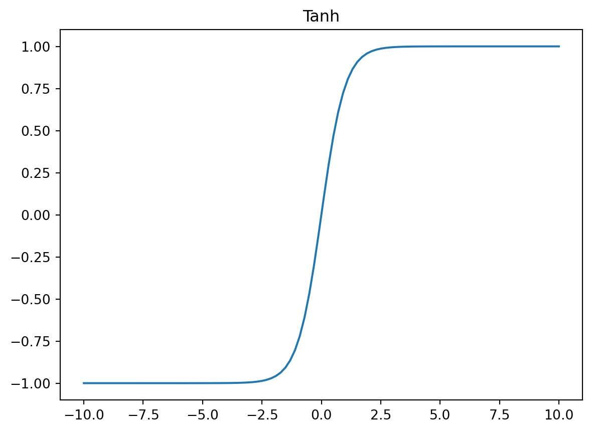
Las funciones de activación no lineales, como la \(\sigma\) y \(\tanh\) sufren de un gran problema computacional llamado problema de fuga de gradiente.
La fuga de gradiente hace que sea muy difícil entrenar y ajustar los parámetros de las capas iniciales en la red. Este problema empeora a medida que aumenta el número de capas en la red.
La fuga de gradiente es la causa principal que hace que las activaciones sigmoideas o Tanh no sean adecuadas para los modelos de Deep Learning (aprendizaje profundo). La función de activación ReLU no sufre de gradiente de fuga porque la derivada siempre es 1 para entradas positivas. Así que siempre considere usar ReLU como la función de activación en los primeros borradores del diseño de su modelo.
La creación de una arquitectura de red neuronal que se adapte más a un problema en particular es un arte. Existe una dirección de estudio separada en el aprendizaje profundo llamado Búsqueda de arquitectura neural, que automatiza la ingeniería de arquitectura de red: https://lilianweng.github.io/lil-log/2020/08/06/neural-architecture-search.html. Pero incluso estos motores de búsqueda no pueden competir con las habilidades heurísticas humanas en el diseño todavía. Existen algunas técnicas que aumentan la probabilidad de mejorar el rendimiento de la red neuronal. Por supuesto, estas técnicas no garantizan la mejora en todos los casos. A veces incluso pueden empeorar el rendimiento de la red neuronal. Pero es probable que desarrolle una arquitectura de modelo robusta siguiendo estos enfoques.
La función de pérdida calculará un error de red en cada iteración, mientras que la función de optimización determina “cómo y en qué dirección cambiar los parámetros de peso”.
Hay una cantidad diversa de funciones de pérdida, cada una de ellas está destinada a una tarea en particular. Para el análisis de series de tiempo, hay tres funciones de pérdida principales:
Pérdida absoluta (L1): La pérdida absoluta es la métrica más simple de la distancia entre dos vectores:
\[ absolute loss = \frac{\sum |y_{actual} - y_{predicción}|}{n} \]
En PyTorch, la función de pérdida absoluta se implementa de la siguiente manera:
a = torch.tensor([1,2]).float()
b = torch.tensor([1, 5]).float()
abs_loss = torch.nn.L1Loss()
abs_error = abs_loss(a,b)
print(f'abs: {abs_error.item()}')abs: 1.5Error cuadrático medio (MSE) (L2): Es la función de pérdida más utilizada para los problemas de predicción de series de tiempo:
\[ mean\_squared\_error = \frac{\sum(y_{actual} - y_{predicted})^2}{n} \]
Pérdida suave (L1): es algo intermedio entre las funciones de pérdida absoluta y MSE. La pérdida absoluto (L1) es menos sensible a los valores atípicos que MSE:
\[ smooth\_loss(y^{\prime},y) = \frac{1}{n}\sum z_i \]
donde \(y\) es valor real, \(y\) se predice, \(z_i\) se define como:
\[ z = \begin{equation} \begin{matrix} \frac{0.5(y_{i}^{\prime} - y_i)^2}{\beta}, & |y_{i}^{\prime} - y_i| < \beta\\ |y_{i}^{\prime} - y_i| - 0.5\beta, & otro\_caso \end{matrix} \end{equation} \]
La función de pérdida de L1 suave tiene un parámetro \(\beta\), es igual a 1 por defecto.
El objetivo principal de un optimizador es cambiar los parámetros de pesos del modelo para minimizar la función de pérdida. La selección de un optimizador adecuado depende completamente de la arquitectura de la red neuronal y los datos sobre los que ocurre el entrenamiento.
Adagrad: es un algoritmo de optimización basado en gradiente que adapta la tasa de aprendizaje a los parámetros. Realiza actualizaciones más pequeñas para los parámetros asociados con características frecuentes y actualizaciones más grandes para parámetros asociados con características raras.
Adadelta es la versión avanzada del algoritmo de Adagrad. Adadelta busca minimizar su tasa de aprendizaje agresiva y monotónica que disminuye. En lugar de acumular todos los gradientes pasados.
Adam es otro método de optimización que calcula las tasas de aprendizaje adaptativo para cada parámetro. Además de guardar un promedio exponencialmente en descomposición de gradientes cuadrados anteriores como Adadelta, Adam también mantiene un promedio exponencialmente de disminución de gradientes anteriores.
Comenzaremos explorando algunas de las arquitecturas de redes neuronales más eficientes para el pronóstico de series de tiempo. Nos centraremos en la implementación de redes neuronales recurrentes (RNN), unidad recurrentes cerradas (GRU), redes de memoria a largo plazo (LSTM). Comprender los principios básicos de las RNN será una buena base para su aplicación directa y dominar otras arquitecturas similares. Trataremos de cubrir la lógica y el núcleo de cada arquitectura, su aplicación práctica y pros y contras.
Discutiremos los siguientes temas:
Recurrent neural network (RNN)
Gated recurrent unit network (GRU)
Long short-term memory network (LSTM)
RNN (Red Neuronal Recurrente Estándar) tiene un concepto de un estado oculto. Un estado oculto puede tratarse como memoria interna. El estado oculto no intenta recordar todos los valores pasados de la secuencia sino solo su efecto. Debido a la memoria interna, las RNN pueden recordar cosas importantes sobre su entrada, lo que les permite ser muy preciosos para predecir valores futuros.
Estudiemos la teoría de RNN de una manera más formal. En RNN, la secuencia de entrada se representa a traves de un bucle. Cuando toma una decisión, considera la entrada actual y también lo que ha aprendido de las entradas que recibio anteriormente. Veamos el gráfico computacional de RNN para comprender esta lógica:

donde,
\(x_1, x_2, . . . , x_n\) son la secuencia de entrada.
\(h_i\) es el estado oculto. \(h_i\) es un vector de longitud \(h\).
RNN Cell representa la capa de red neuronal que calcula la siguiente función: \(h_t = \tanh(W_{ih}x_t + b_{ih} + W_{hh}h_{(t-1)} + b_{hh})\)
Podemos ver a detalle la RNN Cell:

La RNN Cell combina información sobre el valor actual de la secuencia \(x_i\) y el estado previamente oculto \(h_{i-1}\). La RNN Cell, devuelve un estado oculto actualizado \(h_i\) después de aplicar la función de activación.
La RNN tiene los siguientes parámetros, que se ajustan durante el entrenamiento:
\(W_{ih}\) pesos ocultos de entrada
\(b_{ih}\) sesgos oculto de entrada
\(W_{hh}\) pesos ocultos - ocultos
\(B_{hh}\) sesgos oculto - oculto
Nota: Un error común ocurre cuando los subíndices en los parámetros RNN \((W_{ih}, b_{ih}, W_{hh}, b_{hh})\) se interpretan como una dimensión de índice o tensor. No, son solo la abreviatura de entrada-oculto \((h_í)\) y oculto-oculto \((h)\). El mismo principio aplica a los parámetros de otros modelos: GRU y LSTM.
En ocasiones, los cientificos de datos utilizan la siguiente representación de las RNN:

El gráfico que se muestra puede dar lugar a algunos malentendidos, y estoy tratando de evitar esto. Pero si este tipo de gráfico se adapta a tu intuición, entonces úsalo sin ninguna duda.
Ahora estamos listos para examinar una implementación de RNN utilizando PyTorch
import torch.nn as nn
class RNN(nn.Module):
def __init__(self,
hidden_size,
in_size = 1,
out_size = 1):
super(RNN, self).__init__()
self.rnn = nn.RNN(
input_size = in_size,
hidden_size = hidden_size,
batch_first = True)
self.fc = nn.Linear(hidden_size, out_size)
def forward(self, x, h = None):
out, _ = self.rnn(x, h)
last_hidden_states = out[:, -1]
out = self.fc(last_hidden_states)
return out, last_hidden_statesNote que nuestro modelo devuelve dos salidas: predicción y estado oculto. Es crucial reutilizar los estados ocultos durante la evaluación RNN. Utilizaremos conjuntos de datos de consumo de energía por hora ( https://www.kaggle.com/robikscube/Hourly-energy-Consumed) para la implementación de RNN.
import pandas as pd
import torch
df = pd.read_csv('AEP_hourly.csv')
ts = df['AEP_MW'].astype(int).values.reshape(-1, 1)[-3000:]
import matplotlib.pyplot as plt
plt.title('AEP Hourly')
plt.plot(ts[:500])
plt.show()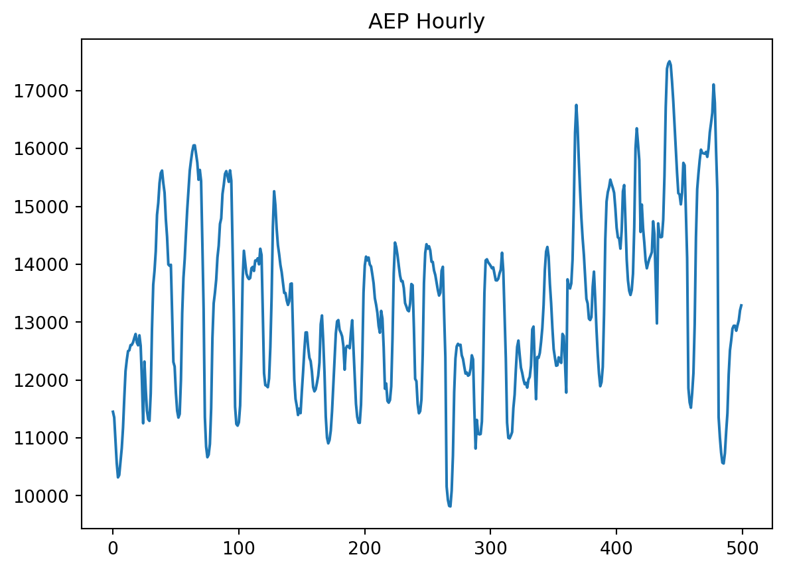
Podemos ver en que esta es una serie de tiempo realmente complicada. Tiene varios factores de estacionalidad con picos apenas predecibles.
A continuación, voy a mostrarte como se desempeña RNN en la serie de tiempo AEP Hourly:
import copy
import random
import sys
import numpy as np
import matplotlib.pyplot as plt
import torch
from sklearn.preprocessing import MinMaxScaler
random.seed(1)
torch.manual_seed(1)
# Parametros globales
features = 240
# Longitud del conjunto de datos de prueba
test_ts_len = 300
# tamaño del estado oculto
rnn_hidden_size = 24
# tasa de aprendizaje de optimizador
learning_rate = 0.02
training_epochs = 500
def sliding_window(ts, features):
X = []
Y = []
for i in range(features + 1, len(ts) + 1):
X.append(ts[i - (features + 1):i - 1])
Y.append([ts[i - 1]])
return X, Y
def get_training_datasets(ts, features, test_len):
X, Y = sliding_window(ts, features)
X_train, Y_train, X_test, Y_test = X[0:-test_len],\
Y[0:-test_len],\
X[-test_len:],\
Y[-test_len:]
train_len = round(len(ts) * 0.7)
X_train, X_val, Y_train, Y_val = X_train[0:train_len],\
X_train[train_len:],\
Y_train[0:train_len],\
Y_train[train_len:]
x_train = torch.tensor(data = X_train).float()
y_train = torch.tensor(data = Y_train).float()
x_val = torch.tensor(data = X_val).float()
y_val = torch.tensor(data = Y_val).float()
x_test = torch.tensor(data = X_test).float()
y_test = torch.tensor(data = Y_test).float()
return x_train, x_val, x_test,\
y_train.squeeze(1), y_val.squeeze(1), y_test.squeeze(1)
# Preparando datos para entrenamiento
scaler = MinMaxScaler()
scaled_ts = scaler.fit_transform(ts)
x_train, x_val, x_test, y_train, y_val, y_test =\
get_training_datasets(scaled_ts, features, test_ts_len)
# Inicialización del modelo
model = RNN(hidden_size = rnn_hidden_size)
model.train()C:\Users\juani\AppData\Local\Temp\ipykernel_9444\1156180628.py:50: UserWarning:
Creating a tensor from a list of numpy.ndarrays is extremely slow. Please consider converting the list to a single numpy.ndarray with numpy.array() before converting to a tensor. (Triggered internally at C:\b\abs_bao0hdcrdh\croot\pytorch_1675190257512\work\torch\csrc\utils\tensor_new.cpp:204.)
RNN(
(rnn): RNN(1, 24, batch_first=True)
(fc): Linear(in_features=24, out_features=1, bias=True)
)# Entrenamiento
optimizer = torch.optim.Adam(params = model.parameters(), lr = learning_rate)
mse_loss = torch.nn.MSELoss()
best_model = None
min_val_loss = sys.maxsize
training_loss = []
validation_loss = []
for t in range(training_epochs):
prediction, _ = model(x_train)
loss = mse_loss(prediction, y_train)
optimizer.zero_grad()
loss.backward()
optimizer.step()
val_prediction, _ = model(x_val)
val_loss = mse_loss(val_prediction, y_val)
training_loss.append(loss.item())
validation_loss.append(val_loss.item())
if val_loss.item() < min_val_loss:
best_model = copy.deepcopy(model)
min_val_loss = val_loss.item()
if t % 50 == 0:
print(f'epoch {t}: train - {round(loss.item(), 4)}, '
f'val: - {round(val_loss.item(), 4)}')epoch 0: train - 0.377, val: - 0.0866
epoch 50: train - 0.0061, val: - 0.0133
epoch 100: train - 0.0021, val: - 0.0044
epoch 150: train - 0.0018, val: - 0.0034
epoch 200: train - 0.0015, val: - 0.003
epoch 250: train - 0.0014, val: - 0.0027
epoch 300: train - 0.0013, val: - 0.0026
epoch 350: train - 0.0012, val: - 0.0025
epoch 400: train - 0.0012, val: - 0.0024
epoch 450: train - 0.0012, val: - 0.0024Y aquí llegamos al punto más difícil. Debe pasar el estado oculto al modelo RNN cuando lo evalua. La forma más sencilla de calentar el estado oculto es ejecutar el modelo en los datos de validación una vez y pasar un estado oculto cálido a través de cada iteración y por último evaluamos el modelo que construimos en el conjunto de datos de prueba.
best_model.eval()
_, h_list = best_model(x_val)
h = (h_list[-1, :]).unsqueeze(-2)
predicted = []
for test_seq in x_test.tolist():
x = torch.Tensor(data = [test_seq])
y, h = best_model(x, h.unsqueeze(-2))
unscaled = scaler.inverse_transform(np.array(y.item()).reshape(-1, 1))[0][0]
predicted.append(unscaled)
real = scaler.inverse_transform(y_test.tolist())
plt.title("Conjunto de datos prueba - RNN")
plt.plot(real, label = 'real')
plt.plot(predicted, label = 'predicción')
plt.legend()
plt.show()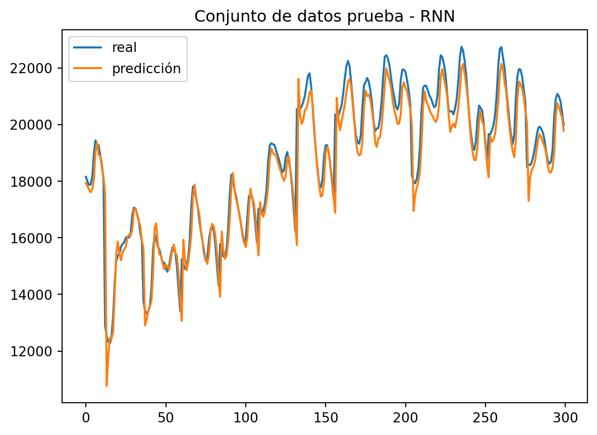
RNN muestra un gran rendimiento en el conjunto de datos de prueba. El modelo que hemos entrenado predice picos estacionales con mucha precisión.
Y finalmente, examinamos el proceso de entrenamiento en sí.
plt.title('Desempeño RNN')
plt.yscale('log')
plt.plot(training_loss, label = 'Entrenamiento')
plt.plot(validation_loss, label = 'validación')
plt.ylabel('Loss')
plt.xlabel('Epoch')
plt.legend()
plt.show()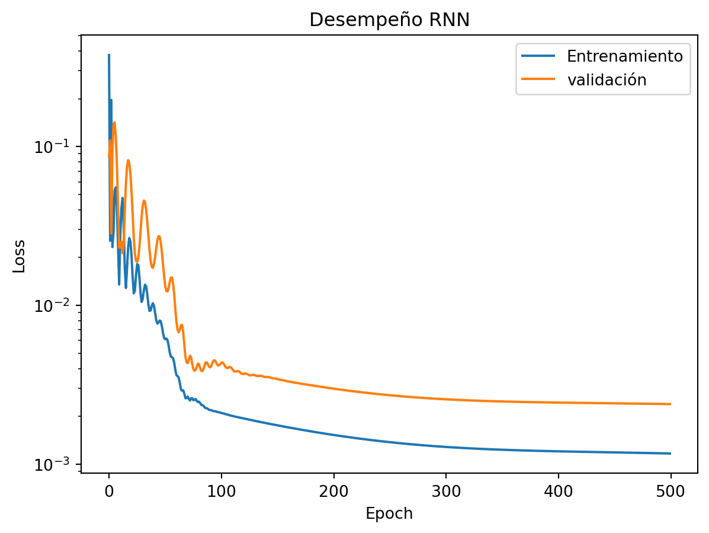
El proceso del entrenamiento es suave sin picos agudos e impredecibles.
Ahora, podemos establecer con confianza la promesa y la efectividad de la aplicación de RNN a los problemas de pronósticos de la serie temporal.
A pesar de todas las ventajas de RNN, tiene desventajas significativas:
Debido a la complejidad computacional, sufren problemas de gradiente de fuga. El proceso de entrenamiento se vuelve demasiado lento. El problema del gradiente de fuga es un problema común a todas las RNN.
El estado oculto se actualiza en cada iteración, lo que dificulta el almacenamiento de información a largo plazo en RNN. Las arquitecturas GRU y LSTM resuelven este problema. Tienen enfoques similares sobre cómo almacenar información a largo plazo.
La GRU es es una versión avanzada de la RNN clásica. El propósito principal de GRU es almacenar información a largo plazo. En breve exploraremos como GRU logra esto.
La forma más fácil de almacenar información a largo plazo en un estado oculto es restringir las actualizaciones ocultas sobre cada iteración. Este enfoque evitará sobrescribir información importante a largo plazo.
Puede encontrar la siguiente definición de GRU en internet:
Se comienza calculando la puerta de actualización \(z_t\) para el peso de tiempo \(t\) usando la fórmula:
\[ \begin{eqnarray*} z_{t} &=& \sigma(W^{z}x_t + U^{z}h_{t-1}) \hspace{1cm} \mbox{Puerta de actualización}\\[0.2cm] \end{eqnarray*} \]
lo que sucede aquí es que cuando \(x_t\) se conecta a la unidad de red, se multiplica por su propio peso \(W^{z}\). Lo mismo ocurre con \(h_{t-1}\), que contiene la información de las unidades \(t-1\) anteriores y se múltiplica por su propio peso \(U^{z}\). Ambos resultados se suman y se aplica una función de activación sigmoidea \((\sigma)\) para acotar el resultado entre 0 y 1.
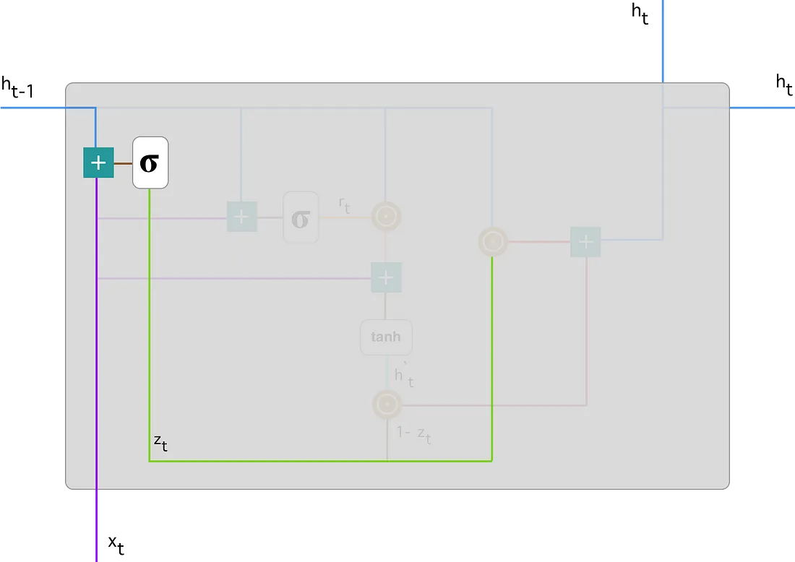
La puerta de actualización ayuda al modelo a determinar cuánta información pasada (de pasos de tiempo anteriores) debe transmitirse al futuro. Esto es muy poderoso porque el modelo puede decidir copiar toda la la información del pasado y eliminar el riesgo de que desaparezca el problema de fuga del gradiente.
Luego continuamos con Restablecer puerta:
Básicamente, esta puerta se utiliza desde el modelo para decidir cuánta información pasada se debe olvidar. Para calcularlo utilizamos:
\[ r_t = \sigma(W^{r}x_t + U^{r}h_{t-1})\hspace{1cm} \mbox{Restablecer puerta} \]
Esta fórmula es la misma que la de la puerta de actualización. La diferencia viene en los pesos y el uso de la puerta, que veremos en un momento.
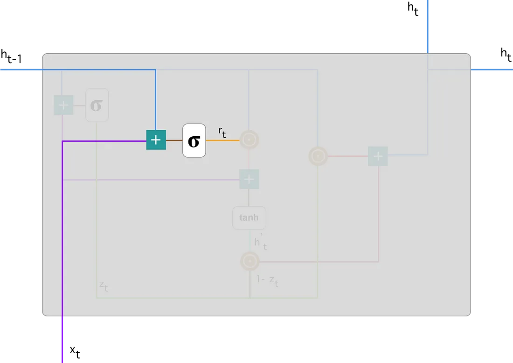
Como antes, conectamos \(h_{t-1} - \mbox{linea azul}\) y \(x_{t} - \mbox{linea violeta}\), los multiplicamos con sus pesos correspondientes, sumamos los resultados y aplicamos la función sigmoidea.
Contenido de la memoria actual:
veamos como afectarán exactamente las puertaas al resultado final. Primero, comenzamos con el uso de la puerta de reinicio. Introducimos un nuevo contenido de memoria que utilizará la puerta de reinicio para almacenar la información del pasado. Se calcula de la siguiente manera:
\[ h_{t}^{\prime} = tanh(Wx_{t} + r_{t}\odot U h_{t-1}) \]
Multiplique la entrada \(x_t\) con un peso \(W\) y \(h_{t-1}\) con un peso \(U\).
Calcule el producto de Hadamard (por elementos) entre la puerta de reinicio \(r_t\) y \(Uh_{t-1}\). Eso determinará qué eliminar de los pasos de tiempo anterior. Digamos que tenemos un problema de análisis de sentimientos para determinar la opinión de una persona sobre un libro a partir de una reseña que escribió. El texto comienza con “Este es un libro de fantasía que ilustra…” y después de un par de párrafos termina con “No disfruté mucho el libro porque creo que captura demasiados detalles”. Para determinar el nivel general de satisfacción con el libro sólo necesitamos la última parte de la reseña. En ese caso, a medida que la red neuronal se acerque al final del texto, aprenderá a asignar un vector \(r_t\) cercano a 0, eliminando el pasado y centrándose solo en las últimas oraciones.
Resuma los resultados de los pasos 1 y 2.
Aplicar la función de activación no lineal tanh.
Puedes ver claramente los pasos aquí:
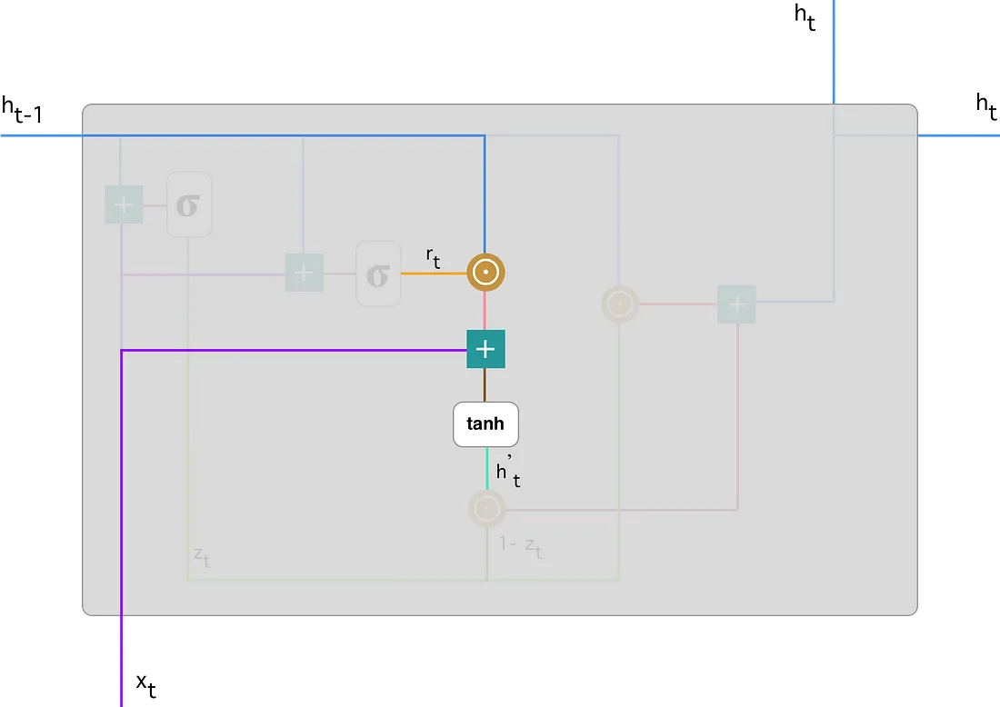
Hacemos una multiplicación por elementos de \(h_{t-1} - \mbox{línea azul}\) y \(r_t - \mbox{línea naranja}\) y luego sumamos el resultado - linea rosa con la entrada \(x_t -\) línea morada. Finalmente, tanh se usa para producir \(h_{t}^{\prime}:\) línea verde brillante.
Memoria final en el paso de tiempo actual
Como último paso, la red necesita calcular \(h_{t}\), el vector que contiene información para la unidad actual y la transmite a la red. Para hacer eso, se necesita la puerta de actualización. Determina qué recopilar el contenido de la memoria actual \((h_t^{\prime})\) y qué de los pasos anteriores \((h_{(t-1)})\). Eso se hace de la siguiente manera:
\[ h_t = z_t\odot h_{t-1} + (1 - z_t)\odot h_{t}^{\prime} \]
Aplique la multiplicación por elementos a la puerta de actualización \(z_t\) y \(h_{(t-1)}\).
Aplique la multiplicación por elementos a \((1- z_t)\) y \(h_{t}^{\prime}\).
Sume los resultados de los pasos 1 y 2.
Pongamos el ejemplo de la reseña del equilibrio. En esta ocasión, la información más relevante se situa al inicio del texto. El modelo puede aprender a establecer el vector \(z_t\) cerca de 1 y conservar la mayor parte de la información anterior. Dado que \(z_t\) estará cerca de 1 en este paso de tiempo, \((1-z_t)\) estará cerca de 0, lo que ignorará gran parte del contenido actual (en este caso, la última parte de la reseña que explica la trama del libro), lo cual es irrelevante para nuestra predicción.
Aquí hay una ilustración que enfatiza la ecuación anterior:
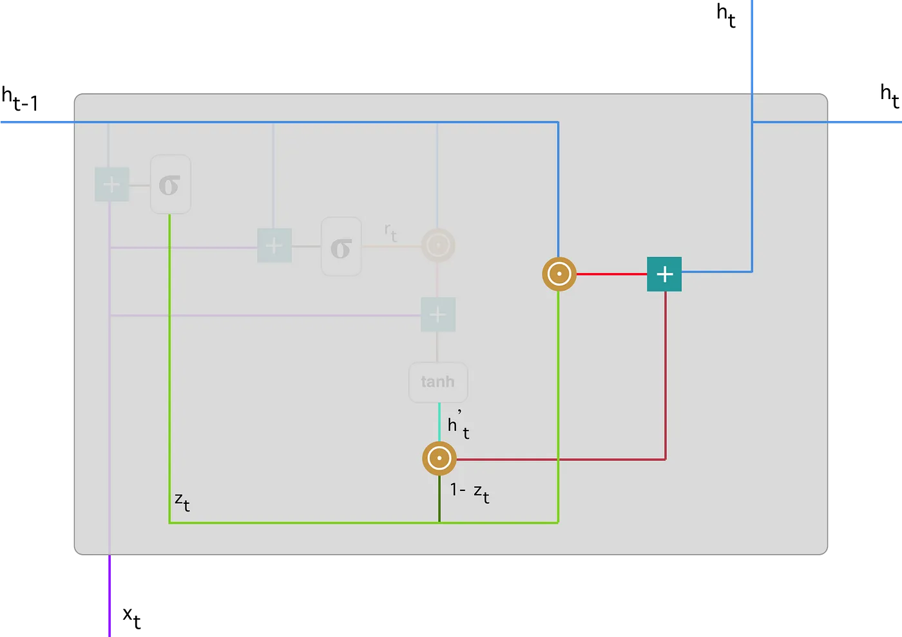
A continuación, puede ver cómo \(z_t\) (línea verde) para calcular \(1 - z_t\) que combinado con \(h_{t}^{\prime}\) (línea verde brillante), produce un resultado en la línea roja oscura. \(z_t\) también se usa con \(h_{t-1} - \mbox{línea azul}\) en una multiplicación de elementos. Finalmente, \(h_{t}:\) la línea azul es el resultado de la suma de las salidas correspondientes a las líneas rojas brillantes y oscuras.
Ahora puede ver cómo las GRU pueden almacenar y filtrar la información utilizando sus puertas de actualización y reinicio. Eso elimina el problema del gradiente de fuga, ya que el modelo no elimina la nueva entrada cada vez, sino que mantiene la información relevante y la pasa a los siguientes pasos de la red. Si se les entrena cuidadosamente, pueden desempeñarse extremadamente bien incluso en escenarios complejos.
El modelo de predicción GRU es muy similar al RNN. Veamos su desempeño utilizando la misma data que el casa RNN.
import torch.nn as nn
random.seed(1)
torch.manual_seed(1)
features = 240
test_ts_len = 300
gru_hidden_size = 24
learning_rate = 0.02
training_epochs = 500
class GRU(nn.Module):
def __init__(self,
hidden_size,
in_size = 1,
out_size = 1):
super(GRU, self).__init__()
self.gru = nn.GRU(
input_size = in_size,
hidden_size = hidden_size,
batch_first = True)
self.fc = nn.Linear(hidden_size, out_size)
def forward(self, x, h = None):
out, _ = self.gru(x, h)
last_hidden_states = out[:, -1]
out = self.fc(last_hidden_states)
return out, last_hidden_states
# Inicializando el modelo GRU
model = GRU(hidden_size = gru_hidden_size)
model.train()
# Entrenamiento
optimizer = torch.optim.Adam(params = model.parameters(), lr = learning_rate)
mse_loss = torch.nn.MSELoss()
best_model = None
min_val_loss = sys.maxsize
training_loss = []
validation_loss = []
for t in range(training_epochs):
prediction, _ = model(x_train)
loss = mse_loss(prediction, y_train)
optimizer.zero_grad()
loss.backward()
optimizer.step()
val_prediction, _ = model(x_val)
val_loss = mse_loss(val_prediction, y_val)
training_loss.append(loss.item())
validation_loss.append(val_loss.item())
if val_loss.item() < min_val_loss:
best_model = copy.deepcopy(model)
min_val_loss = val_loss.item()
if t % 50 == 0:
print(f'epoch {t}: train - {round(loss.item(), 4)}, '
f'val: - {round(val_loss.item(), 4)}')
best_model.eval()
_, h_list = best_model(x_val)
h = (h_list[-1, :]).unsqueeze(-2)
predicted = []
for test_seq in x_test.tolist():
x = torch.Tensor(data = [test_seq])
y, h = best_model(x, h.unsqueeze(-2))
unscaled = scaler.inverse_transform(np.array(y.item()).reshape(-1, 1))[0][0]
predicted.append(unscaled)epoch 0: train - 0.0626, val: - 0.0326
epoch 50: train - 0.0017, val: - 0.0026
epoch 100: train - 0.0012, val: - 0.0024
epoch 150: train - 0.0012, val: - 0.0023
epoch 200: train - 0.0011, val: - 0.0022
epoch 250: train - 0.0011, val: - 0.0022
epoch 300: train - 0.0011, val: - 0.0023
epoch 350: train - 0.0011, val: - 0.0023
epoch 400: train - 0.0011, val: - 0.0022
epoch 450: train - 0.0011, val: - 0.0022real = scaler.inverse_transform(y_test.tolist())
plt.title("Conjunto de datos prueba - GRU")
plt.plot(real, label = 'real')
plt.plot(predicted, label = 'predicción')
plt.legend()
plt.show()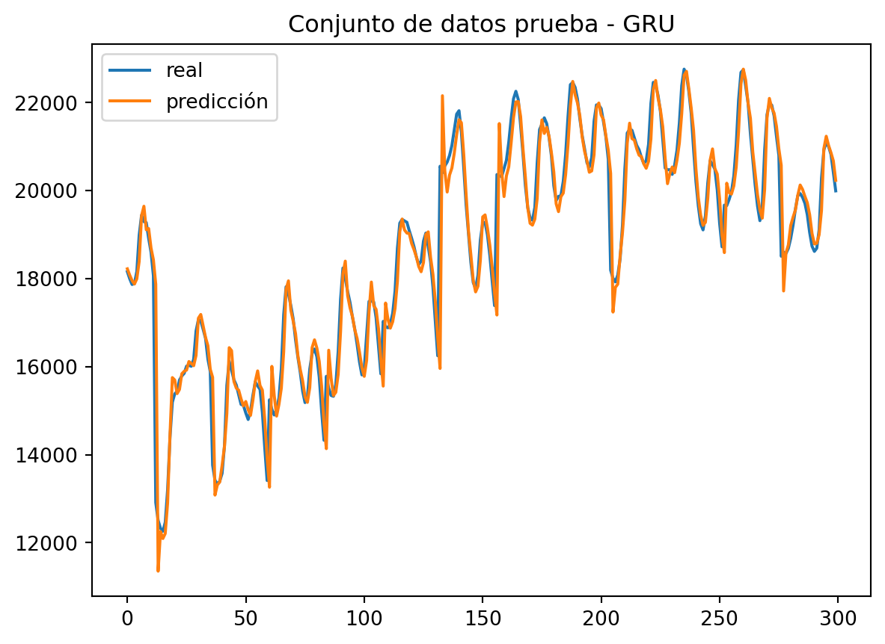
Vemos que el modelo GRU imita el comportamiento original de la serie temporal con bastante precisión.
plt.title('Desempeño GRU')
plt.yscale('log')
plt.plot(training_loss, label = 'Entrenamiengto')
plt.plot(validation_loss, label = 'validación')
plt.ylabel('Loss')
plt.xlabel('Epoch')
plt.legend()
plt.show()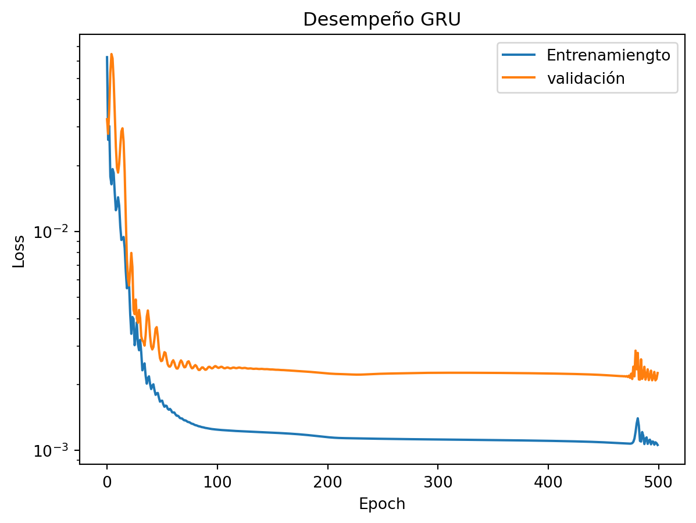
Las pérdidas de entrenamiento y validación tienen descenso asintótico con un brecha natural constante entre ellas. Podemos concluir que el modelo realmente aprende el comportamiento de la serie temporal.
La red LSTM se ha desarrollado para superar el problema de fuga de gradiente en RNN al mejorar el flujo de gradiente de la red. Debe mencionarse que la arquitectura apareció mucho antes que la GRU. La arquitectura LSTM se desarrolló en 1997, y el GRU se propueso en 2014. El diseño GRU es más simple y más comprensible que LSTM. Es por eso que comenzamos nuestro estudio examinando primero GRU.
Como su nombre lo índica, LSTM aborda los mismos problemas de memoria a corto y largo plazo que GRU. A nivel global, el flujo computacional del LSTM se ve de la siguiente manera:

LSTM funciona sobre los principios similares que GRU pero tiene más variables. RNN y GRU solo pasan un estado oculto \(h_t\) a través de cada iteración. Pero LSTM pasa dos vectores:
\(h_t\) estado oculto (memoria a corto plazo)
\(c_t\) estado de celda (memoria a largo plazo)
Las salidas de LSTM Cell se calculan a través de las fórmulas:
\[ \begin{eqnarray*} i_t &=& \sigma(W_{ii}x_t + b_{ii} + W_{hi}h_{t-1} + b_{hi})\\[0.2cm] f_t &=& \sigma(W_{ii}x_{t} + b_{if} + W_{hf}h_{t-1} + b_{hf})\\[0.2cm] g_t &=& tanh(W_{ig}x_t + b_{ig} + W_{hg}h_{t-1} + b_{hn})\\[0.2cm] o_t &=& \sigma(W_{io}x_t + b_{io} + W_{ho}h_{t-1} + b_{ho})\\[0.2cm] c_t &=& f_t \circ c_{t-1} + i_t\circ g_t\\[0.2cm] h_t &=& o_t \circ tanh(c_t) \end{eqnarray*} \]
donde:
\(\sigma\) es la función sigmoidea
\(\circ\) es el producto de Hadamard
En cuanto a las variables:
\(i_t~(puerta de entrada)\) es la variable que se utiliza para actualizar el estado \(c_t\). El estado previamente oculto \(h_t\) y la secuencia \(x_t\) se dan como entradas a una función sigmoidea \((\sigma)\). Si la salida está cerca de 1, entonces la información es más importante.
\(f_t ~ (puerta~de~olvido)\) es la variable que decide que información debe olvidarse en el estado \(c_t\). El estado \(h_t\) de estado previamente oculto y la secuencia \(x_t\) se dan como entradas a una función sigmoidea. Si la salida \(f_t\) está cerca de cero, la información se puede olvidar, mientras que si la salida está cerca de 1, la información debe almacenarse o recordarse.
\(g_t\) representa información importante potencialmente nueva para el estado \(c_t\).
\(c_t ~ (estado~celda)\) es una suma de:
estado de celda anterior \(c_{t-1}\) con información olvidada \(f_t\).
nueva información de \(g_t\) seleccionada por \(i_t\)
\(o_t ~ (puerta~de~salida)\) es la variable para actualizar el estado oculto \(h_t\).
\(h_t ~(estado~oculto)\) es el siguiente estado oculto que se calcula eligiendo la información importante del estado de celda o celular \(c_t\).
A continuación te muestro el gráfico computacional de la celda LSTM:
LSTM tiene los siguientes parámetros, que se ajustan durante el entrenamiento:
\(W_{ii}, W_{hi}, W_{if}, W_{hf}, W_{ig}, W_{hg}, W_{io}, W_{ho}\) estos son los pesos.
\(b_{ii}, b_{hi}, b_{if}, b_{hf}, b_{ig}, b_{hg}, b_{io}, b_{ho}\) estos son sesgos.
Ahora examinemos la implementación de Pytorch del modelo de predicción LSTM:
import torch.nn as nn
class LSTM(nn.Module):
def __init__(self,
hidden_size,
in_size = 1,
out_size = 1):
super(LSTM, self).__init__()
self.lstm = nn.LSTM(
input_size = in_size,
hidden_size = hidden_size,
batch_first = True)
self.fc = nn.Linear(hidden_size, out_size)
def forward(self, x, h = None):
out, h = self.lstm(x, h)
last_hidden_states = out[:, -1]
out = self.fc(last_hidden_states)
return out, hComo vemos, la implementación del modelo LSTM es bastante similar a las implementaciones de RNN y GRU.
Probaremos el modelo LSTM con el siguiente conjunto de datos de la serie tiempo de consumo de energía por hora).
import pandas as pd
import torch
df = pd.read_csv('NI_hourly.csv')
ts = df['NI_MW'].astype(int).values.reshape(-1, 1)[-3000:]
import matplotlib.pyplot as plt
plt.title('NI Hourly')
plt.plot(ts[:500])
plt.show()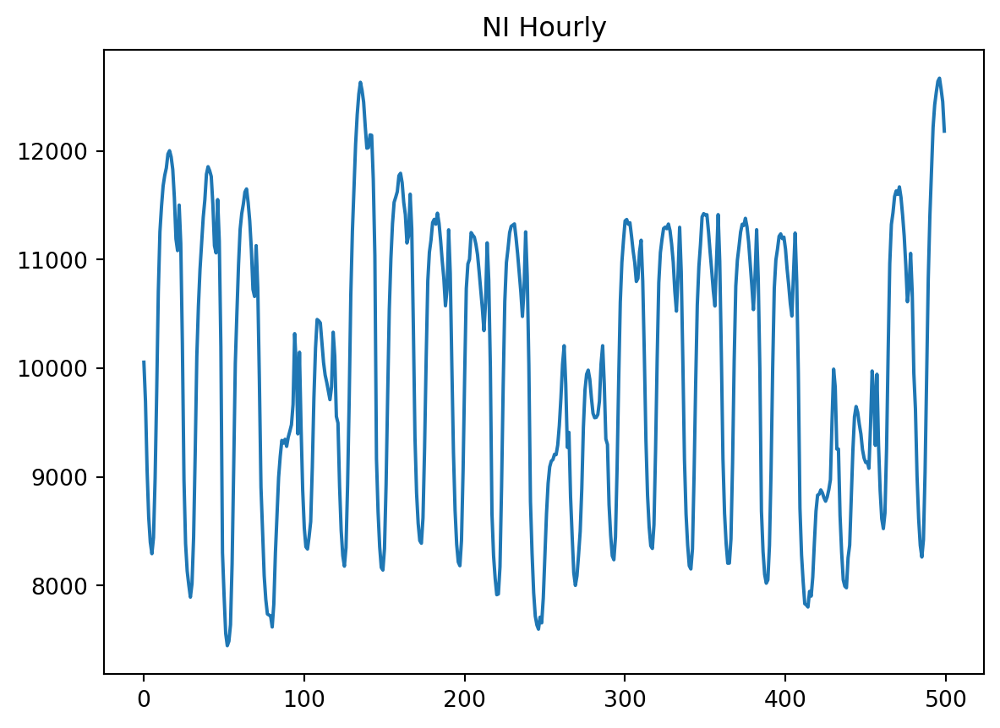
Veamos el modelo en acción:
import copy
import random
import sys
import numpy as np
import matplotlib.pyplot as plt
import torch
from sklearn.preprocessing import MinMaxScaler
random.seed(1)
torch.manual_seed(1)
features = 240
test_ts_len = 300
lstm_hidden_size = 24
learning_rate = 0.02
training_epochs = 100
# Preparar el conjunto de datos para el entrenamiento
scaler = MinMaxScaler()
scaled_ts = scaler.fit_transform(ts)
x_train, x_val, x_test, y_train, y_val, y_test =\
get_training_datasets(scaled_ts, features, test_ts_len)
# Inicializando el modelo
model = LSTM(hidden_size = lstm_hidden_size)
model.train()
# Entrenamiento
optimizer = torch.optim.Adam(params = model.parameters(), lr = learning_rate)
mse_loss = torch.nn.MSELoss()
best_model = None
min_val_loss = sys.maxsize
training_loss = []
validation_loss = []
for t in range(training_epochs):
prediction, _ = model(x_train)
loss = mse_loss(prediction, y_train)
optimizer.zero_grad()
loss.backward()
optimizer.step()
val_prediction, _ = model(x_val)
val_loss = mse_loss(val_prediction, y_val)
training_loss.append(loss.item())
validation_loss.append(val_loss.item())
if val_loss.item() < min_val_loss:
best_model = copy.deepcopy(model)
min_val_loss = val_loss.item()
if t % 10 == 0:
print(f'epoch {t}: train - {round(loss.item(), 4)}, '
f'val: - {round(val_loss.item(), 4)}')epoch 0: train - 0.0979, val: - 0.087
epoch 10: train - 0.0253, val: - 0.0255
epoch 20: train - 0.0131, val: - 0.0119
epoch 30: train - 0.0056, val: - 0.0059
epoch 40: train - 0.0032, val: - 0.0043
epoch 50: train - 0.0026, val: - 0.0029
epoch 60: train - 0.002, val: - 0.0025
epoch 70: train - 0.0018, val: - 0.0023
epoch 80: train - 0.0016, val: - 0.0021
epoch 90: train - 0.0014, val: - 0.0019Para una evaluación del modelo LSTM, necesitamos pasar un estado celular y estado oculto.
best_model.eval()
with torch.no_grad():
_, h_list = best_model(x_val)
h = tuple([(h[-1, -1, :]).unsqueeze(-2).unsqueeze(-2)
for h in h_list])
predicted = []
for test_seq in x_test.tolist():
x = torch.Tensor(data = [test_seq])
y, h = best_model(x, h)
unscaled = scaler.inverse_transform(
np.array(y.item()).reshape(-1, 1))[0][0]
predicted.append(unscaled)
real = scaler.inverse_transform(y_test.tolist())
plt.title("Conjunto de prueba - LSTM")
plt.plot(real, label = 'real')
plt.plot(predicted, label = 'predicción')
plt.legend()
plt.show()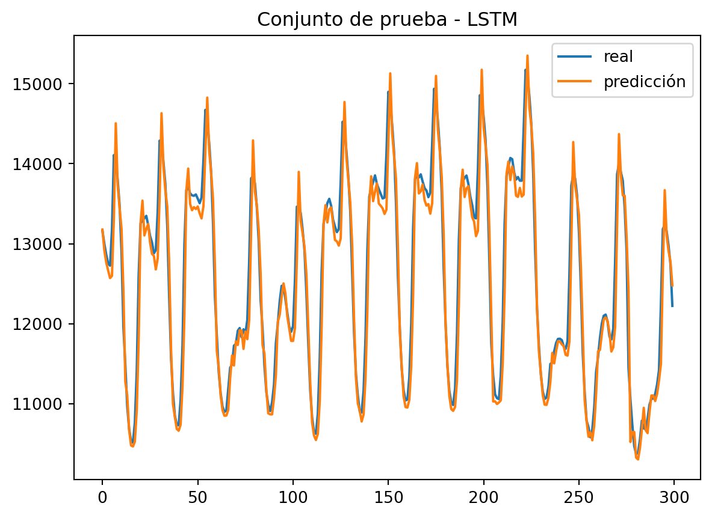
LSTM captura muy bien el comportamiento de las series temporales para hacer predicciones precisas.
plt.title('Desempeño LSTM')
plt.yscale('log')
plt.plot(training_loss, label = 'Entrenamiento')
plt.plot(validation_loss, label = 'validación')
plt.ylabel('Loss')
plt.xlabel('Epoch')
plt.legend()
plt.show()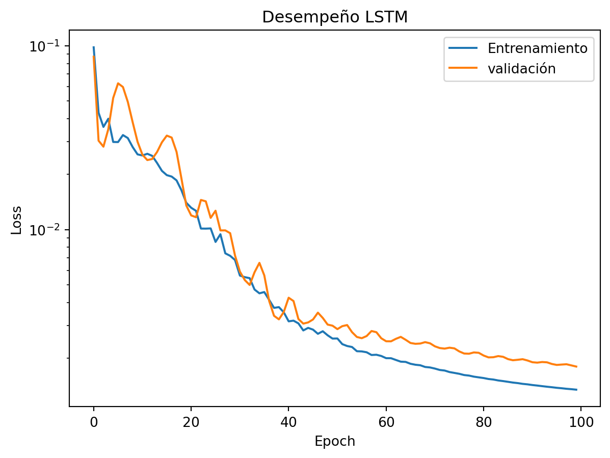
Mirando, concluimos que detuvimos el proceso de entrenamiento demasiado temprano. Obtenemos modelos más precisos si establecemos más epocas (epoch) para el entrenamiento.
Pudimos ver que las redes neuronales recurrentes muestran excelentes resultados y son adecuadas para problemas de pronósticos de series de tiempo.
Las Redes Neuronales Recurrentes son la técnica muy popular de aprendizaje profundo (Deep Learning) para el pronóstico de series de tiempo, ya que permiten producir predicciones confiables en series de tiempo en diversos problemas. El principal problema con RNN es que sufre el problema de fuga de gradiente cuando se aplica a secuencia largas, y no tiene una herramienta de memoria a largo plazo. Se desarrollaron LSTM y GRU para evitar el problema de gradiente de RNN con el uso de puertas que regulan el flujo de información e implementan el almacenamiento de memoria a largo plazo. El uso de LSTM y GRU ofrece resultados notables, pero LSTM y GRU no siempre funcionan mejor que RNN.
RNN tiene un estado oculto que puede tratarse como una memoria interna de la secuencia de entrada.
RNN vuelve a calcular el estado oculto después de procesar cada nuevo valor de entrada de forma recurrente.
RNN sufre un problema de fuga de gradiente.
RNN actualiza un estado oculto en cada iteración. Por tanto, no tiene memoria a largo plazo.
GRU implementa la puerta de reinicio, que rechaza algunas actualizaciones en un estado oculto.
LSTM pasa dos vectores a través de cada iteración: estado oculto y estado de celda.
Time Series Forecasting Using Deep Learning - Ivan Gridin